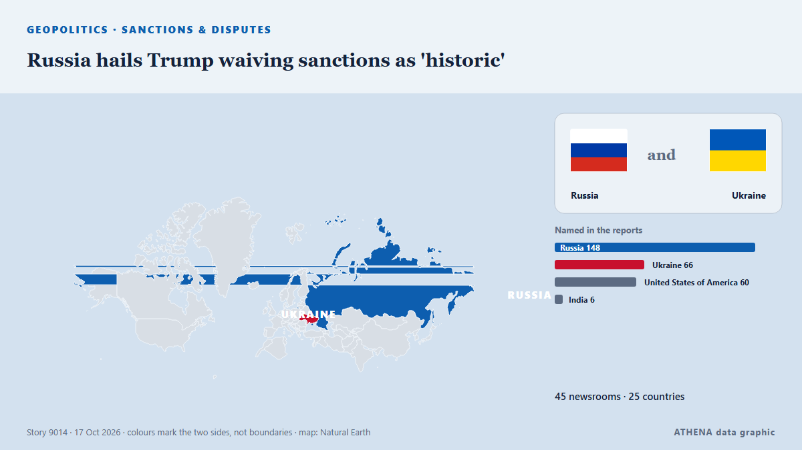

روسيا وأوراسيا
روسيا وأوراسيا: أحدث الأحداث دولة بدولة، مع الخطر والمصادر والدول من ATHENA.

الجغرافيا السياسيةRussia hails Trump waiving sanctions as 'historic'
Trump’s executive order comes as he has been warming towards Russia. من The Straits Times
US delivery of 500 Patriot missiles to Ukraine will span 3 years starting in 2030
NATO Supreme Allied Commander Europe General Alexus Grynkewich said the United States continues to supply Ukraine with Patriot interceptor missiles, as well as weapons packages paid for by European… من Ukrinform (English)
Musk accuses Ukraine of violating Starlink’s terms of service following dispute over coverage
SpaceX CEO Elon Musk has accused Ukraine’s military of violating Starlink’s terms of service, after Kyiv said that access to the service had been restored. من Egypt Independent
Search and rescue operation in Komyshuvakha: 38 more people may be trapped under rubble, 59 remain missing
The bodies of 31 people killed in a Russian airstrike have been recovered from the rubble in Komyshuvakha, Zaporizhzhia region. من Ukrinform (English)
Poland Deploys Counterterrorism Police Near Russia Border
Poland has deployed additional police, including counterterrorism units, in the Warmian-Masurian and Podlaskie regions after receiving warnings of possible sabotage near the Russian exclave of… من Kyiv Post
Ukraine-Russia war latest: White House praises Melania Trump as Kyiv clarifies ceasefire details with Moscow
The localised ceasefire for the Russian-occupied city will reportedly begin on October 29. من The Independent
Hackers hit Ukraine, Russia's emergency apps, send fake nuclear, chemical attack alerts
All-clear messages were sent shortly afterward for each alert, and Ukraine's Ministry for Digital Transformation said the app had been temporarily suspended. من The Jerusalem Post